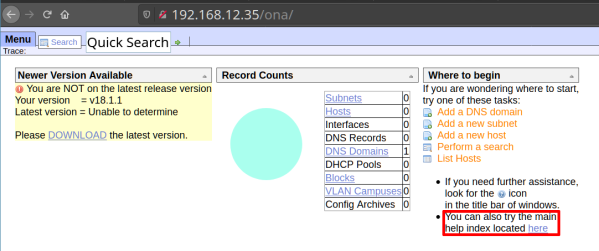

1.2 Port 80
Let's see what there is on port 80.
Open a browser and go to http://192.168.12.35
Output:
There's nothing interesting here.
But let's go to http://192.168.12.35/ona
Output:

We don't know a priori what this page is, but if you go “Main help index” you can see it takes to OpenNetAdmin Github page.
 Index
Index